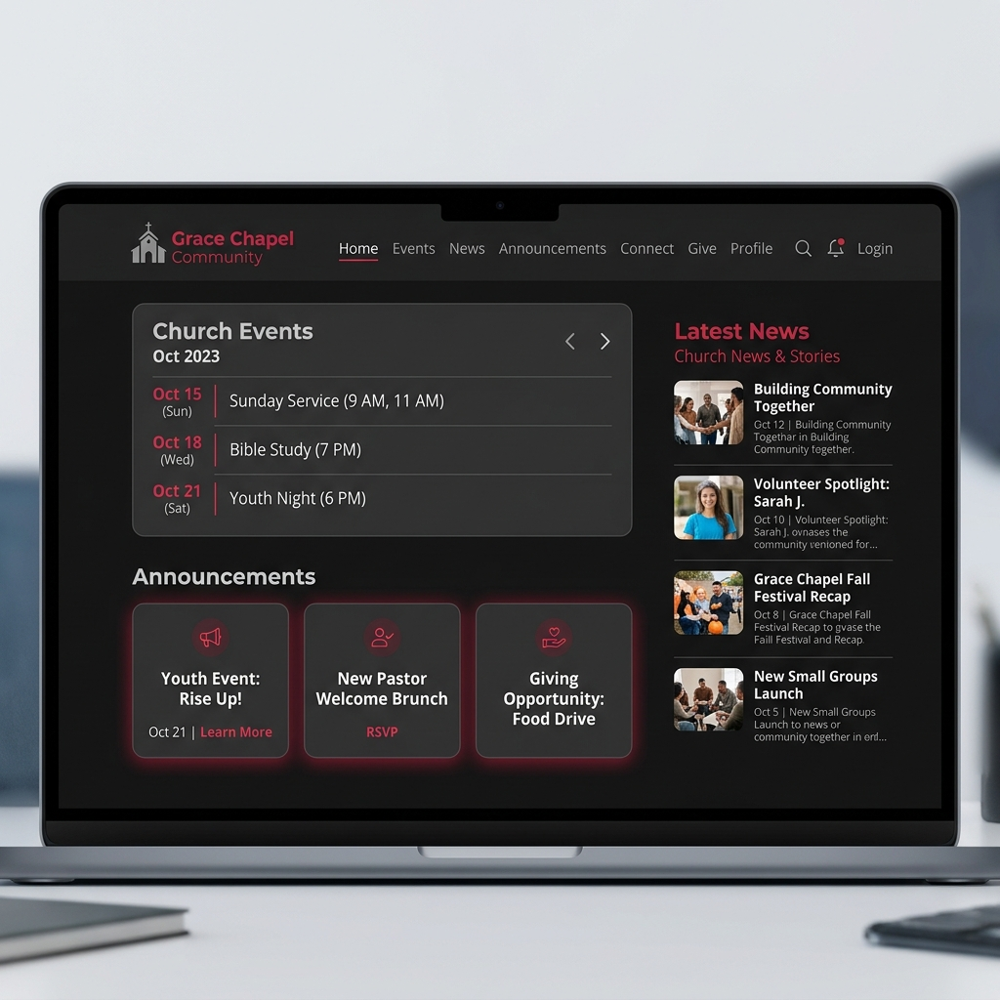

HKBP Sigumpar Church Website
Community Service (PKM Project)

Project Evaluation Q&A
1. Project Summary
A community-oriented web portal built to support information dissemination, event schedules, and organizational activities for the HKBP Sigumpar Church.
2. Project Type
Community Service Assignment (PKM Project). Initiated to assist local institutions in transitioning to digital administration and public announcements.
3. Team & Role
GROUP PROJECT. Worked as a Web Developer, collaborating with a team to analyze user needs and implement functional web components.
4. Key Contributions & Impact
Provided the church community with a reliable public platform for events, strengthening engagement and digital presence.
5. Learnings & Takeaways
Learned how to gather client requirements, conduct system usability testing, and handle iterative error correction based on user feedback.
Technologies
HTML5, CSS3, JavaScript, PHP, MySQL, Figma.
Key Skills Demonstrated
Requirements Gathering, User Interface Design, Usability Testing, Client Communication, Front-End Programming.